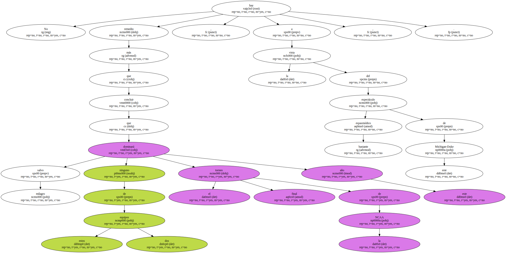
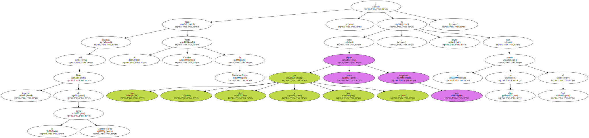
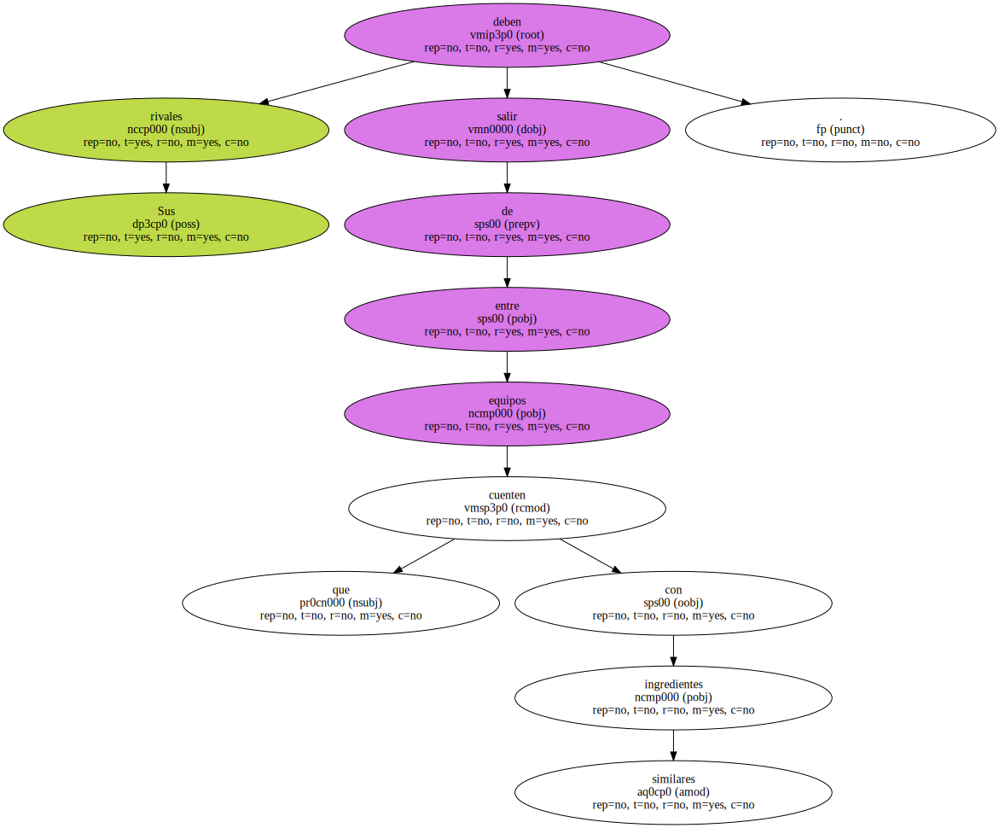
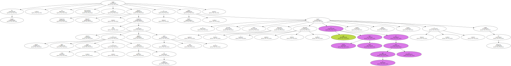
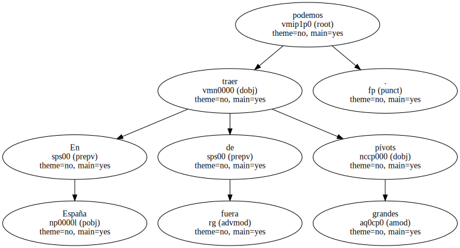
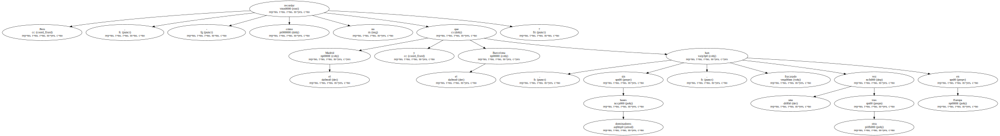
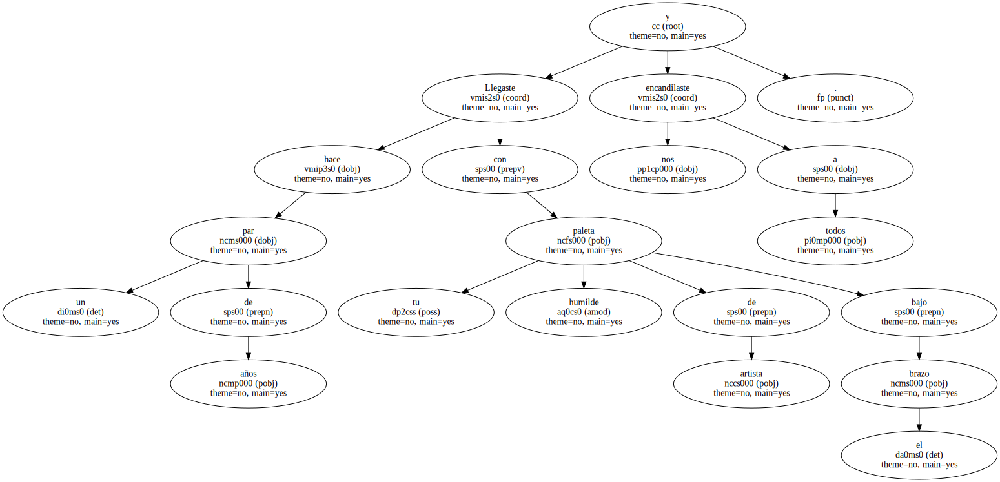
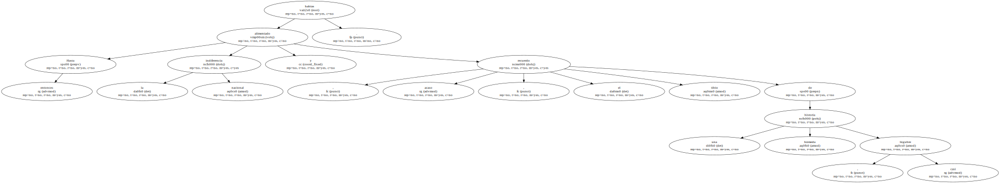
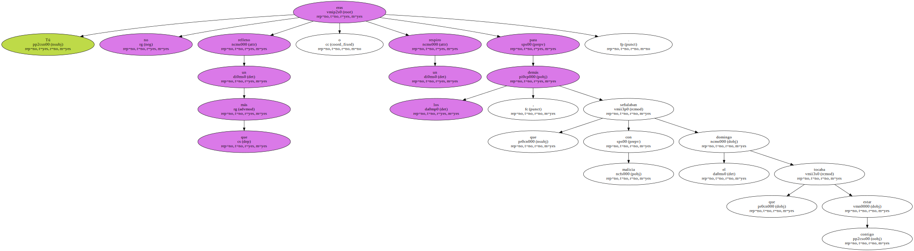
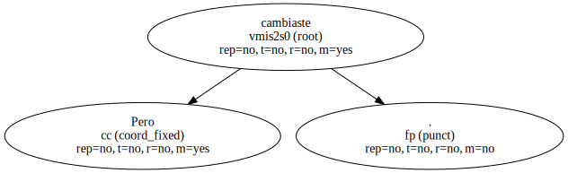

No hay más remedio , a la vista del espectáculo bastante espasmódico de este Michigan-Duke , que concluir que salvo milagro ninguno de estos dos equipos dominará el torneo final de la NCAA este año.
Después del Duke imperial de la pareja Laettner-Hurley llegó el North Carolina de Montross-Phelps , y como estos dos , pívot y base , siguen juntos esta temporada , es lógico que se cuente con ellos al final.
Sus rivales deben salir de entre equipos que cuenten con similares ingredientes.
Por ejemplo , ese equipo interesantísimo de Connecticut : Donyell Marshall , 206 centímetros de potencia y agilidad ( tapones , triples , veinte puntos y una docena de rebotes cada noche ) y Doron Sheffer , el discutido novato israelí ( - profesional ? - aficionado ? ) que es todavía mejor base de lo que se decía : estatura , planta , técnica y sentido del baloncesto.
En España podemos traer de fuera grandes pívots.
Pero , - cómo no recordar que , sin bases dominadores , el Madrid y el Barcelona han fracasado una vez tras otra en Europa.
Llegaste hace un par de años con tu humilde paleta de artista bajo el brazo y nos encandilaste a todos.
Hasta entonces habías alimentado la indiferencia nacional y , acaso , el recuerdo tibio de una historia húmeda , casi lúgubre.
Tú no eras más que un relleno o un respiro para los demás , que señalaban con malicia el domingo que tocaba estar contigo.
Formabas parte de la España profunda , volcada al norte , perdida en aldeas sin luz , contando con el mar sólo para la galerna.

Pero cambiaste.
